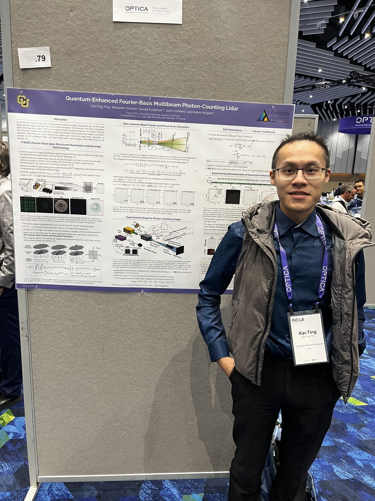

"Novel Coherent Interferometric Systems for High-Resolution LiDAR Imaging"
Coded aperture imaging offers computational target resolution with a single sensitive detector, but its implementation in lidar, especially for multi-beam systems, faces challenges with scalability and speed using traditional optics. This dissertation introduces three novel 3D lidar systems employing interferometric detection and minimal hardware (only two modulators). Each system utilizes a bucket detector and advanced computational methods like matched filtering and FFT for 3D image reconstruction.
The first system uses direct detection and time-multiplexing of pseudo-noise (PN) codes transmitted from a single aperture via acousto-optic deflectors, enabling mirrorless multi-beam imaging without complex detector arrays. The second system develops coherent PN interferometry for true 3D imaging, recording fast-time acquisitions for parallel 2D ranging and azimuth compression using synthetic wavelength, by interfering time-delayed BPSK signals. The third system transmits a 2D array of Doppler-encoded beams that interfere to sample spatial Fourier components of the object, with enhanced sensitivity through photon-counting and waveform recovery. These interferometric strategies offer simplicity, scalability, and promising alternatives for high-resolution 3D lidar imaging.

Kai-Ting Ting is a Ph.D. candidate in Electrical Engineering specializing in quantum-enhanced optical sensing and imaging. His research focuses on photon-counting interferometry, pseudo-random modulation, and computational LiDAR reconstruction, with expertise in real-time signal processing, GPU-accelerated algorithms, and time-correlated photon detection.
Date: September 8, 2025 (subject to change)
Time: 02:30 PM MDT (subject to change)
Location: Room [TBA], University of Colorado Boulder
Zoom Link: https://cuboulder.zoom.us/j/3646656490?omn=96733436484
Your presence and questions are highly valued!